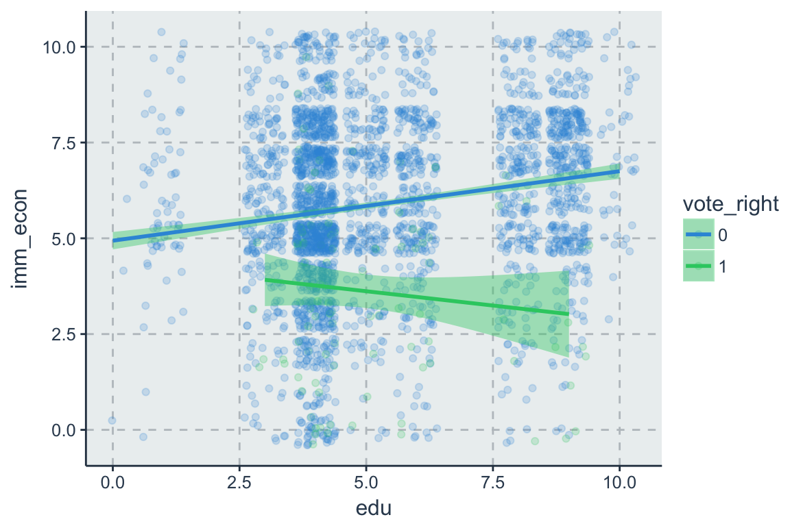
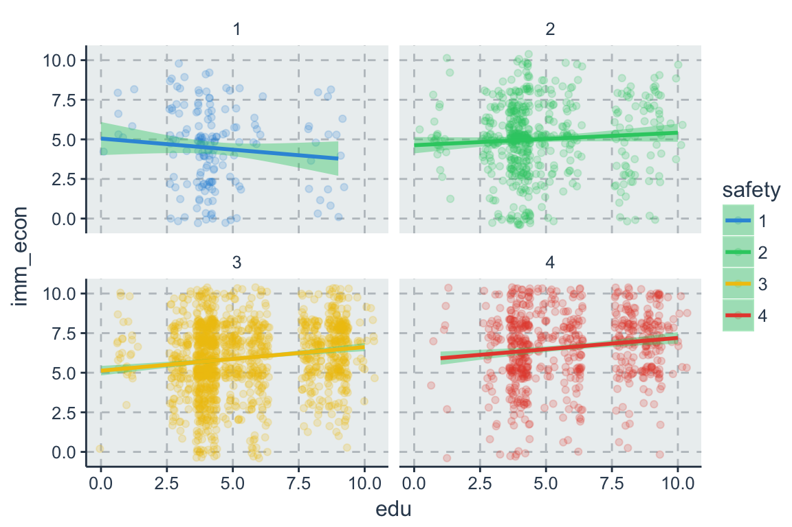

7 Non-Linearität
# load data
load(url('https://github.com/systats/workshop_data_science/raw/master/Rnotebook/data/ess_workshop.Rdata'))
# filter data
library(dplyr)
ess_ger <- ess %>%
dplyr::filter(country == "DE")
fit0 <- lm(imm_econ ~ 1, data = ess_ger)
fit1 <- lm(imm_econ ~ left_right + vote_right, data = ess_ger)
fit2 <- lm(imm_econ ~ left_right + vote_right + edu + age + gender, data = ess_ger)Im linearen Regressionsframework können auch nicht-lineare Zusammenhänge spezifiziert werden. Dabei bleibt die Parameterschätzung weiterhin unverändert linear nur die Variablen werden transformiert. Das bedeutet, dass weiterhin die Interpretation wenn x um eine Einheit ansteigt, dann steigt y um \(\beta\)-Einheiten, allerdings ändert sich die Einheit. Statt x wird nun z.B. die Standardabweichung von x oder der natürliche Logarithmus von x als Maßeinheit in Abhängigkeit von \(\beta\) interpretiert. Häufigste werden biologischen Daten aufgrund ihrer Skewness transformiert. Rechtslastigkeit kann durch Logarithmierung aufgehoben werden und eine zugrunde liegende Exponentialverteilung kann mittels log-Transformation linearisiert werden.
7.1 Interaktionen
Eine Möglichkeit nicht-lineare Zusammenhänge zu modellieren ist der Einbezug eines Moderationseffekts. Dabei hängt die Wirkung der einen Variablen von der Ausprägungen der anderen Variable ab. Dazu wird eine Interaktion zwischen zwei Variablen gebildet und zusätzlich zu den Ursprungsvariablen (Haupteffekten) ins Modell aufgenommen, auch wenn diese nicht definiert worden sind oder nicht signifikant werden.
- Interaktion zweier binärer Variablen
- Interaktion einer kontinuierlichen und einer binären Variable
- Interaktion zweier kontinuierlicher Variablen
| Formula | Description |
|---|---|
y~a+x |
no interaction |
y~a:x |
interaction between variables a and x |
y~a*x |
the same and also includes the main effects |
y~a/x |
interaction between variables a and x (nested) |
y~(a+b+c)^2 |
includes all two-way interactions |
y ~ a*b*c-a:b:c \(\;\;\;\) |
excludes the three-way interactionI() to use the original arithmetic operators |
7.1.1 Interaktion zweier binärer Variablen
Es seien \(D_1\) und \(D_2\) zwei Dummies. Die Regression
\[y_i = \beta_0 + \beta_1 D_{1i} + \beta_2 D_{2i} + \beta_3 (D_{1i} \times D_{2i}) + \varepsilon_i\]
lässt zu, dass der Effekt von \(D_1\) auf \(y\) mit \(D_2\) variiert, denn
\[E(y_i|D_1, D_2 = 0) = \beta_0 + \beta_1 D_{1i}\] \[E(y_i|D_1, D_2 = 1) = (\beta_0 + \beta_2) + (\beta_1 + \beta_3) D_{1i}\]
7.1.2 Interaktion einer metrischen und einer binären Variable
Es sei \(D_i\) eine binäre und \(X_i\) eine metrische Variable. Die Regression
\[y_i = \beta_0 + \beta_1 x_{i} + \beta_2 D_{i} + \beta_3 (x_{i} \times D_{i}) + \varepsilon_i\] lässt zu, dass der Effekt von \(x_i\) auf \(y\) mit \(D_i\) variiert, denn
\[E(y_i|x_i, D_i = 0) = \beta_0 + \beta_1 x_{i}\] \[E(y_i|x_i, D_i = 1) = (\beta_0 + \beta_2) + (\beta_1 + \beta_3) x_{i}\]

7.1.3 Interaktion zweier metrischen Variablen
Im Regressionsmodell mit zwei metrischen Variablen \(x_1\) und \(x_2\)
\[y_i = \beta_0 + \beta_1 x_{1i} + \beta_2 x_{2i} + \beta_3 (x_{1i} \times x_{2i}) + \varepsilon_i\]
lässt der Interaktionsterm (\(x_{1i} \times x_{2i}\)) zu, dass der Effekt der einen Variable jeweils vom Niveau der anderen Variable abhängt, d.h.
\[\frac{\Delta y}{\Delta x_1} = \beta_1 + \beta_3 x_2 \text{ und } \frac{\Delta y}{\Delta x_2} = \beta_1 + \beta_3 x_1\]
Zudem lässt sich zeigen, dass bei einer Veränderung \(\Delta x_1\) und \(\Delta x_2\)
\[\Delta y = (\beta_1 + \beta_3 x_2) \Delta x_1 + (\beta_2 + \beta_3 x_1) \Delta x_2 + \beta_3 \Delta x_1 \Delta x_2\]

7.2 Logarithmus
Wenn der Zusammenhang zwischen X und Y zwar nicht linear ist, jedoch eine prozentuale Veränderung von X einen konstanten Effekt auf Y hat, bietet sich der natürliche Logarithmus (die Inverse der Exponentialfunktion) an. Die Logarithmusfunktion ist steiler für kleine Werte von X und flacher für große Werte von X. Sie ist nur für positive Werte von X definiert und monoton steigend.
Die Log Transformation der Residuen ermöglicht es den Einfluss von Ausreißer zu kontrollieren und Heteroskedatsie beheben. Außerdem Zensierte Variablen für OLS nicht geeignet. Log Transformiert schon. Das Prinzip: Eine kleine Veränderung entlang der Logarithmusfktion enstpricht in etwa der prozentualen Veränderung von x, da für kleine Werte von \(\Delta x/x\) gilt.
\[ log(x + \Delta x) -log(x) \approx \frac{\Delta x}{x} \% \]
Zu unterscheiden sind drei Fälle.
- X wird logarithmiert, Y nicht - das lineare-log Modell (Lin-Log)
- Y wird logarithmiert, X nicht - das log-lineare Modell (Log-Lin)
- X und Y werden logarithmiert - das Log-Log Modell
7.2.1 Lin-Log
In diesem Fall wird x logarithmiert, y hingegen nicht:
\[ y_i = \beta_0 + \beta_1 log(x_{1i}) + \varepsilon_i \]
Welchen Effekt hat in diesem Fall eine Veränderung von X auf Y?
\[\Delta y_i = (\beta_0 + \beta_1 log(x+\Delta x)) - (\beta_0+\beta_1 log(x)) \\ = \beta_1[ln(x+\Delta x) -log(x)] \approx \beta_1(\Delta x/x)\]
Demnach entspricht ein ANstieg von \(x\) um 1%, d.h. \(\Delta x/x = 0.01\), verändert um \(0.01 \beta_1\) Einheiten.
fit_unlog <- lm(gov_cens ~ infl, dat)
fit_linlog <- lm(gov_cens ~ log(infl), dat)
summary(fit_linlog)7.2.2 Log-Lin
\[\begin{align*} log(y_i) & = \beta_0 + \beta_1 x_{1i} + \varepsilon_i \\ & = e^{\beta_0 + \beta_1 x_{1i} + \varepsilon_i} \end{align*}\]- Multiplikative Struktur.
- Semi-Log-Modell
- Die abhängige Variable ist logarithmisch transformiert. \(\beta\) misst hierbei die Elastizität von y im Bezug auf x.
- Fragestellung: Um wieviel Prozent ändert sich y, wenn x um eine Einheit erhöht wird? (prozentuale Aussagen)
- Eine Steigerung von X um eine Einheit verändert Y um \(100 \times \beta_1\%\)
\[ \beta = \frac{d\;\;log(y)}{d\;\;x} \]
7.2.3 Log-Log
\[ log(y_i) = \beta_0 + \beta_1 log(x_{1i}) + \varepsilon_i \]
\[\begin{align*} log(y_i) & = \beta_0 + log(\beta_1 x_{1i}) + \varepsilon_i \\ & = e^{\beta_0 + \beta_1 log(x_{1i}) + \varepsilon_i} \\ & = e^{\beta_0} e^{\beta_1 log(x_{1i})} e^{\varepsilon_i} \\ & = e^{\beta_0} e^{log(x_{1i})^{\beta_1}} e^{\varepsilon_i} \\ & = e^{\beta_0} x_{1i}^{\beta_1}x_{2i}^{\beta_2} e^{\varepsilon_i} \end{align*}\]Welchen Effekt hat in diesem Fall eine Veränderung von X auf Y?
\[\begin{align*} ln(y + \Delta y)- ln(y) = & (\beta_0 + \beta_1 ln(x + \Delta x)) - (\beta_0 + \beta_1 log(x)) \\ & = \beta_1 \frac{\Delta x}{x} \approx \frac{\Delta y}{y} \end{align*}\]Eine Steigerung von x um \(1\%\) verändert y um \(\beta_1\) Prozent.
Log-lineare-Modell (constant elasticity model) * Multiplikative Struktur. * Wert von \(x_1\) hängt von \(x_2\) ab. * Die abhängige und die unabhängige Variablen werden logarithmisch transformiert. * Beziehung zwischen Varianz und Mittelwert kann durch diese Transformation getilgt werden. * Problem - wenn Datensatz Nullen enth¨alt, * \(\beta\) misst hierbei die Elastizität von y im Bezug auf x (daher auchModell mit konstanten Elastizitäten genannt). * Fragestellung: Um wieviel Prozent ändert sich y, wenn x um ein Prozent erhöht wird?
Marginaler Effekt:
\[ \beta = \frac{d\;\;log(y)}{d\;\;log(x)} \]
7.3 Polynome
Eine nicht-lineare Regressionsfunktion N-ter Ordnung lautet:
\[ y_i = \beta_0 + \beta_1 x_i + \beta_2 x^2_i + \beta_3 x^3_i+ \dots+\beta_p x^n \]
Mit solch einer Modellierung kann eine Assoziation unter Umständen besser approximieren als eine lineare Funktion. Dabei gilt allgemein: je höher das Polynom, desto flexibler kann sich die Funktion an die Daten anpassen. Zawr wird die Punktwolke genauer approximiert, doch verlieren wir Freiheitsgerade und erhalten schlechte Prognosen für neue Datenpunkte (Bias-Varianz-Tradeoff) (Stock/Waston, Kap. 8.2). Regressionen mit Polynomen höher Ordnung sollten nur im schrittweisen Vergelich zu weniger komplexen Modellen ihre Nützlichkeit erweisen.
Zwei Möglichkeiten die Ordnung eines Polynoms zu bestimmen:
- Theorie geleitet
- Heuristik durch Vergleich
- Schätze das Modell mit einem maximalen Polynom von X (erfahrungsgemäß r=4 oder r=5)
- Teste die Hypothese \(H_0 : \beta_r = 0\) mittels der t-Statistik
- Falls H0 nicht verworfen werden kann: Schätze das Modell mit r-1 +Wiederhole (2) und (3) bis der Koeffizient der höchsten Potenz von X signifikant ist.
fit_1 <- lm(engage_soc ~ gov_effect, data = dat)
fit_2 <- lm(engage_soc ~ gov_effect + I(gov_effect^2), data = dat)
fit_3 <- lm(engage_soc ~ gov_effect + I(gov_effect^2) + I(gov_effect^3), data = dat)anova(fit_1, fit_3)
anova(fit_2, fit_3)Da der p-Wert > 0.05 ist, kann die Nullhypothese streng genommen nicht abgelehnt werden. Damit wäre das erste Modell mit weniger Komplexität zu bevorzugen. Da der Signifikanztest nur kanpp den Grenzwert unterschreitet kann trotzdem von einer Verbesserung gesprochen werden. Denn fit_3 die Punktwolke visuell betrachtet besser approximieren als eine lineare Regressionsfunktion.
Der erwartete Effekt auf Y einer Veränderung von X in nicht-linearen Regressionsfunktionen Es ergibt keinen Sinn X1 zu variieren und X12 (oder weitere Funktionen von X1) konstant zu halten. Die erwartete Veränderung von Y infolge \(\Delta x_1\) ist gegeben durch.
\[ \Delta y_i = E[y_i|x_1 + \Delta x_1, x_2,\dots, x_k] - E[y_i|x_1, x_2,\dots, x_k] \]
\[ \Delta y_i = f(x_1 + \Delta x_1, x_2,\dots, x_k) - f(x_1, x_2,\dots, x_k) \]
| Transformation | R-Code |
Model | Name |
|---|---|---|---|
| \(log \; x\) | \(y \sim log(x)\) | \(y_i = \beta_0 + \beta_1 log(x_i) + \varepsilon_i\) | Logarithmus |
| \(x_i - \bar x\) | \(y \sim scale(x, scale = F)\) | \(y_i = \beta_0 + \beta_1 (x_i - \bar x) + \varepsilon_i\) | Mittenzentrierung |
| \(\frac{x_i-\bar x}{s_x}\) | \(y \sim scale(x)\) | \(y_i = \beta_0 + \beta_1 (\frac{x_i-\bar x}{s_x}) + \varepsilon_i\) | z-Transformation |
| \(\sqrt{x}\) | \(y \sim sqrt(x)\) | \(y_i = \beta_0 + \beta_1 \sqrt{x_i} + \varepsilon_i\) | Wurzel |
| \(x^2\) | \(y \sim poly(x, 2)\) | \(y_i = \beta_0 + \beta_1 x_{1i} + \beta_2 x_{1i}^2 + \varepsilon_i\) | Quadrat |
| \(x^3\) | \(y \sim poly(x, 3)\) | \(y_i = \beta_0 + \beta_1 x_{1i} + \beta_2 x_{1i}^2 + \beta_3 x_{1i}^3 + \varepsilon_i\) | Kubik |
| \(e^x\) | \(y \sim exp(x)\) | \(y_i = \beta_0 + \beta_1 e^{x_i} + \varepsilon_i\) | Exponentiell |
| \(1/x\) | \(y \sim I(1/x)\) | \(y_i = \beta_0 + \beta_1 1/x_i + \varepsilon_i\) | Invers/ Reziprok |
| \(e^{-x}\) | \(y \sim exp(-x)\) | \(y_i = \beta_0 + \beta_1e^{-x_i} + \varepsilon_i\) | Invers Exp. |
dat %>%
ggplot(aes(elite_consul, gov_cens)) +
geom_point(aes(text = country), color = "gray70") +
geom_smooth(method = "lm", formula = y ~ poly(x, 2),se = F) +
#theme_few() +
labs(x="", "Zensur Index")
# plotly::ggplotly(tooltip = c("country", "Deliberation", "Zensur"))7.4 Multigruppenvergleich
Wird angewendet, wenn verschiedenen Regionen der Daten unterschiedliche Regressionsmodelle passen
ess_ger %>%
filter(vote_right == 1) %>%
lm(imm_econ ~ income, data = .)##
## Call:
## lm(formula = imm_econ ~ income, data = .)
##
## Coefficients:
## (Intercept) income
## 4.04071 -0.05416ess_ger %>%
filter(vote_right == 0) %>%
lm(imm_econ ~ income, data = .)##
## Call:
## lm(formula = imm_econ ~ income, data = .)
##
## Coefficients:
## (Intercept) income
## 5.2574 0.1097#texreg::screenreg(list(g1, g2))7.5 Segmented Regression
Segmented regression in einem Modell:
lhs <- function (x) ifelse (x > 30, x, 0)
rhs <- function (x) ifelse (x < 30, 0, x)
gb <- ess_ger %>%
lm(imm_econ ~ lhs(age) + rhs(age), data = .)
gbDiese Transformation kann auch auserhalb des Modells geschehen.
ess_ger %>%
mutate(v1 = ifelse(age > 30, age, 0)) %>%
mutate(v2 = ifelse(age < 30, 0, age)) %>%
lm(imm_econ ~ v1 + v2, data = .)##
## Call:
## lm(formula = imm_econ ~ v1 + v2, data = .)
##
## Coefficients:
## (Intercept) v1 v2
## 5.98603 0.01377 -0.01718